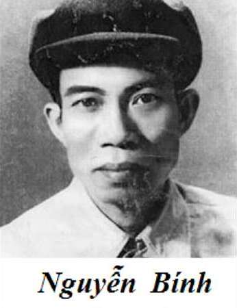

Nguyễn Bính
(1919-1966)
Tên thật là Nguyễn Bính Thuyết, quê làng Thiện Vịnh, huyện Vụ Bản, Nam Định. Làm thơ từ nhỏ, nên quen biết trong phong trào thơ mới, đựoc nhóm tự lực văn đoàn khen tặng. Nguyễn Bính tham gia hoạt động cách mạng bằng khả năng thơ ca của mình. Từ cách mạng tháng Tám, ông ở Nam Bộ, phụ trách Đoàn Văn hoá cứu quốc Rạch Giá, rồi là phó chủ nhiệm Tỉnh bộ Việt Minh tỉnh này, sau đó cộng tác ở Ban Văn nghệ khu Tám. Năm 1966, ông mất ở Nam Định trong cảnh nghèo nàn. Thơ của Nguyễn Bính dễ gây xúc động và hợp với dân quê nên đã đựơc nhiều người thuộc.